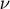
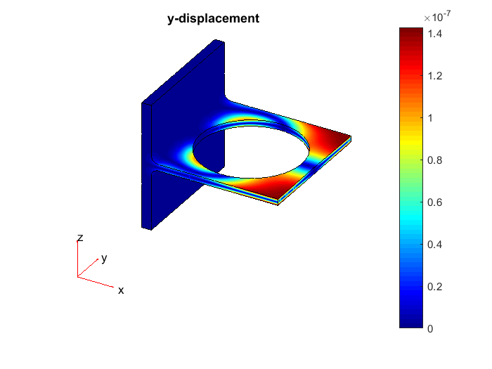

Deflection Analysis of a Bracket
This example shows how to analyze an idealized 3-D mechanical part under an applied loading using Finite Element Analysis (FEA). The objective of the analysis is to determine the maximum deflection caused by the load.
Contents
Create a PDE Model
The first step in solving any 3-D PDE problem is to create a PDE Model. This is a container that holds the number of equations, geometry, mesh, and boundary conditions for your PDE. The equations of linear elasticity have three components, so the number of equations in this model is three.
N = 3; model = createpde(N);
Construct the Geometry
Import an STL file of a simple bracket model using the importGeometry function. This function reconstructs the faces, edges and vertices of the model. It can merge some faces and edges, so the numbers can differ from those of the parent CAD model.
importGeometry(model,'BracketWithHole.stl');
Plot the geometry and turn on face labels. You will need the face labels to define the boundary conditions.
figure pdegplot(model,'FaceLabels','on'); view(30,30); title('Bracket with Face Labels') figure pdegplot(model,'FaceLabels','on'); view(-134,-32) title('Bracket with Face Labels, Rear View')
Define the Boundary Conditions
The problem has two boundary conditions: the back face is immobile and the front face has an applied load. All other boundary conditions, by default, are free Neumann boundaries.
Constrain all three displacements to 0 on the back face, face 3.
applyBoundaryCondition(model,'Face',3,'u',[0,0,0]);
Apply a distributed load in the negative -direction to the front face, face 6.
distributedLoad = 1e4; % Applied load in Pascals applyBoundaryCondition(model,'Face',6,'g',[0,0,-distributedLoad]);
Examine the Elasticity Equations
As explained in 3-D Linear Elasticity Equations in Toolbox Form, you can express the elasticity equations for the deflection of a linear isotropic solid as a three-component system
where when there are no body forces, and is the symmetric matrix
![$$c = \left[ {\begin{array}{*{20}{c}}
{{c_1}}&0&0&0&{{c_{12}}}&0&0&0&{{c_{12}}}\\
\bullet &G&0&G&0&0&0&0&0\\
\bullet & \bullet &G&0&0&0&G&0&0\\
\bullet & \bullet & \bullet &G&0&0&0&0&0\\
\bullet & \bullet & \bullet & \bullet &{{c_1}}&0&0&0&{{c_{12}}}\\
\bullet & \bullet & \bullet & \bullet & \bullet &G&0&G&0\\
\bullet & \bullet & \bullet & \bullet & \bullet & \bullet &G&0&0\\
\bullet & \bullet & \bullet & \bullet & \bullet & \bullet & \bullet &G&0\\
\bullet & \bullet & \bullet & \bullet & \bullet & \bullet & \bullet & \bullet &{{c_1}}
\end{array}} \right].$$](StrainedBracketExample2_eq04733561821008982717.png)
The symbol means the entry is symmetric. Here is the elastic modulus,  is Poisson's ratio, and
You can create the c coefficient for a linear isotropic solid using the elasticityC3D function, which is included in your software (see 3-D Linear Elasticity Equations in Toolbox Form).
Define the Coefficients in Toolbox Syntax
Define the elastic modulus of steel and Poisson's ratio for this material.
E = 200e9; % elastic modulus of steel in Pascals nu = 0.3; % Poisson's ratio
Incorporate these coefficients in toolbox syntax.
c = elasticityC3D(E,nu);
a = 0;
f = [0;0;0]; % Assume all body forces are zero
Create a Mesh
Create a mesh that uses 10-node tetrahedral elements with quadratic interpolation functions. This element type is significantly more accurate than the linear interpolation (four-node) elements, particularly in elasticity analyses that involve bending.
bracketThickness = 1e-2; % Thickness of horizontal plate with hole, meters hmax = bracketThickness; % Maximum element length for a moderately fine mesh generateMesh(model,'Hmax',hmax,'GeometricOrder','quadratic'); figure pdeplot3D(model); title('Mesh with Quadratic Tetrahedral Elements');
Calculate the Solution
The problem coefficients do not depend on the solution and do not depend on time. Therefore, use assempde to calculate the solution.
u = assempde(model,c,a,f);
Examine the Solution
Find the greatest calculated deflection of the bracket. To separate the three solution components, reshape the dimensions of the solution vector to an nNodes-by-3 matrix, where nNodes is the number of nodes.
u3 = reshape(u,[],3);
minUz = min(u3(:,3));
fprintf('Largest deflection in the z-direction is %g meters.\n', minUz);
Largest deflection in the z-direction is -4.47911e-05 meters.
Plot the Solution
To see the solution, plot the components of the solution vector. The maximum deflections are in the -direction. Because the part and the loading are symmetric, the -displacement and -displacement are symmetric and the  -displacement is antisymmetric about the part centerline.
-displacement is antisymmetric about the part centerline.
By default, the plotting routine uses the 'jet' colormap, which has blue as the color representing the lowest value and red representing the highest value. The bracket loading causes face 6 to dip down, so the maximum -displacement appears blue.
% Add feature edges to improve contrast % Perform the query on a linear triangulation. % Suppress the warning about the unused quadratic nodes. warning('off','MATLAB:triangulation:PtsNotInTriWarnId'); [p,~,t] = model.Mesh.meshToPet(); tr = triangulation(model.Mesh.Elements(1:4,:)',p'); warning('on','MATLAB:triangulation:PtsNotInTriWarnId'); [tri xf] = freeBoundary(tr); tr = triangulation(tri,xf); px = xf(:,1); py = xf(:,2); pz = xf(:,3); fe = tr.featureEdges(pi/3); fe = fe'; labels = ['x','y','z']; for i=1:3 figure pdeplot3D(model,'colormapdata',abs(u3(:,i))); title([labels(i),'-displacement']); hold on plot3(px(fe), py(fe), pz(fe), '-k'); hold off end